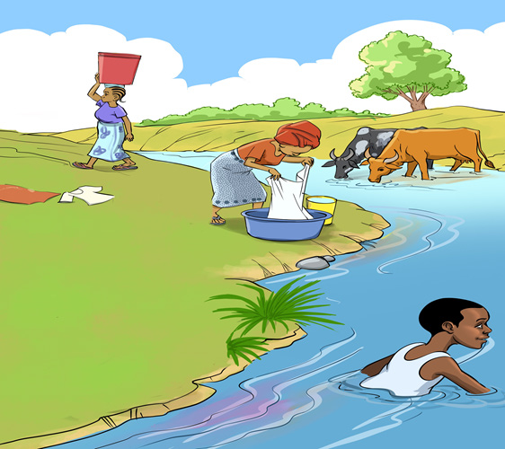

such as natural gas and electricity to minimise the use of firewood and charcoal, which produces carbon dioxide.
Human practices in water sources
Some of the human practices undertaken near or in water sources degrade the water sources.
Activities such as disposing of the waste from homes and businesses, the washing of clothes and the watering of livestock in water sources pollute and degrade water sources.
Other human practices such as urinating or defecating and bathing near or in a water source also pollute the water sources.
Although water sources are polluted, human beings fetch the same water for domestic use as shown in Figure 3.

GEOGRAPHY STD 3, FINAL DAMI (11-12-2023).indd 52
12/09/2025 13:24